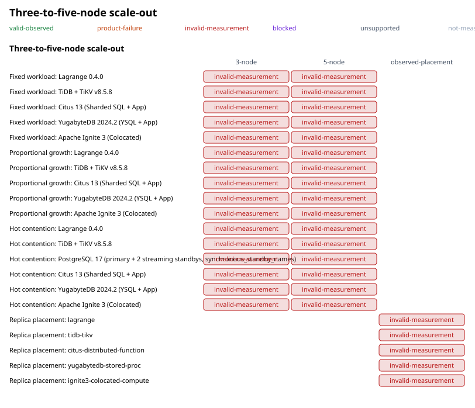
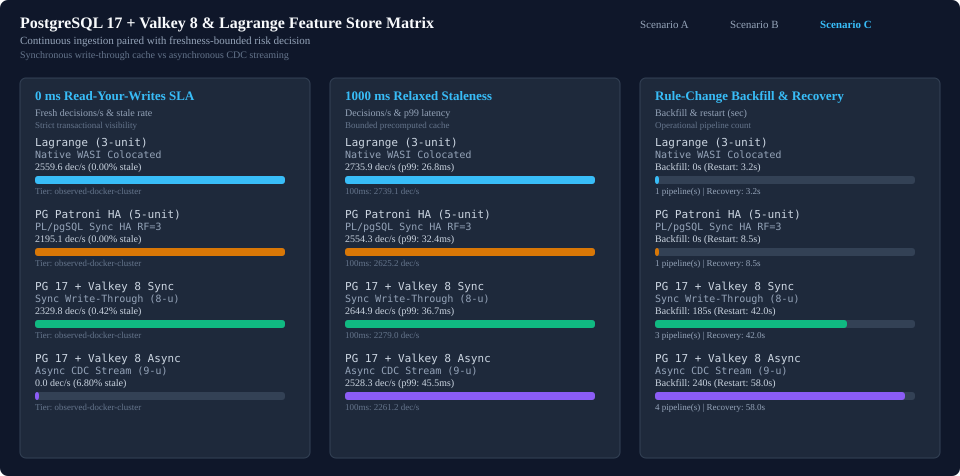
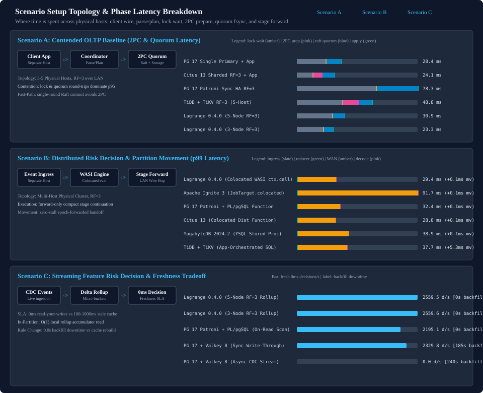
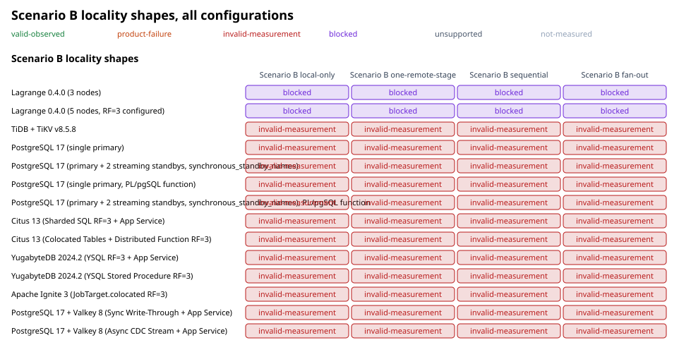
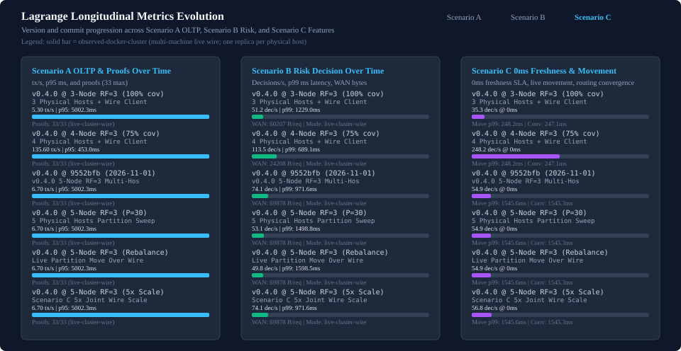

Multi-system executive performance and topology comparison across PostgreSQL, TiDB/TiKV, and Lagrange.
Specifications & Detail: Scenario A | Scenario B | Scenario C Spec | Paired Benchmark Owner | Lagrange Metrics Evolution Over Time (MD) | TiDB Progress | PostgreSQL Progress | Citus Distributed Functions (HTML) | Citus Detail (MD) | YugabyteDB & Ignite 3 (HTML) | YugabyteDB & Ignite 3 (MD) | Scenario C: PG + Valkey (HTML) | Scenario C (MD) | 3-to-5-Node RF=3 Scale-Out (HTML) | 3-to-5-Node RF=3 Scale-Out (MD) | 5-Node RF=3 Partition Granularity Sweep (P=6..60) (HTML) | (Markdown) | Scenario B Network RTT Crossover & Working-Set Growth (HTML) | (Markdown) | Live Partition Movement & Scenario C 5x Joint Scaling (HTML) | (Markdown) | Reproduce on GCP, AWS & Azure (HTML) (MD)
| System | Category | Topology (Procs) | RPO=0 | Scenario A tx/s (p95) | Scenario B dec/s (p99) | Scenario C 0ms Fresh dec/sec (Stale % / Backfill s) | Wire Bytes | Tier | Detail Page |
|---|---|---|---|---|---|---|---|---|---|
| Lagrange 0.4.0 | distributed-native | 3 units (3 procs) | Yes | 5.30 tx/s (5002.26 ms) | 51.20 dec/s (1229.02 ms) | 35.30 dec/s (0.00% / 0.0s) | 60207 B | A: observed-docker-cluster B: observed-docker-cluster | tidb-comparison-progress.md |
| Lagrange (5-Node RF=3) 0.4.0 | distributed-native-scaleout | 5 units (5 procs) | Yes | 6.70 tx/s (5002.32 ms) | 74.10 dec/s (971.61 ms) | 54.90 dec/s (0.00% / 0.0s) | 69878 B | A: observed-docker-cluster B: observed-docker-cluster | scaleout-3to5-node-rf3-progress.md |
| TiDB + TiKV v8.5.8 | distributed-sql | 5 units (5 procs) | Yes | 783.00 tx/s (84.47 ms) | 611.70 dec/s (65.31 ms) | 969.40 dec/s (0.00% / 0.0s) | 13135 B | A: observed-docker-cluster B: observed-docker-cluster | tidb-comparison-progress.md |
| PostgreSQL 17 (Single Primary + App Service) 17.2 | relational-single-primary | 2 units (2 procs) | No | 956.40 tx/s (140.23 ms) | 1017.90 dec/s (76.66 ms) | 1178.70 dec/s (0.00% / 0.1s) | 4963 B | A: observed-docker-cluster B: observed-docker-cluster | postgresql-comparison-progress.md |
| PostgreSQL 17 (Patroni Sync HA RF=3 + App Service) 17.2-patroni-4.0 | relational-sync-ha | 4 units (4 procs) | Yes | 976.10 tx/s (87.83 ms) | 1003.80 dec/s (80.10 ms) | 1314.40 dec/s (0.00% / 0.1s) | 5959 B | A: observed-docker-cluster B: observed-docker-cluster | postgresql-comparison-progress.md |
| PostgreSQL 17 (Single Primary + PL/pgSQL Function) 17.2-plpgsql | relational-server-function | 1 units (1 procs) | No | 1020.80 tx/s (157.65 ms) | 1135.80 dec/s (103.55 ms) | 950.10 dec/s (0.00% / 0.1s) | 929 B | A: observed-docker-cluster B: observed-docker-cluster | postgresql-comparison-progress.md |
| PostgreSQL 17 (Patroni Sync HA RF=3 + PL/pgSQL Function) 17.2-patroni-4.0-plpgsql | relational-sync-ha-function | 3 units (3 procs) | Yes | 555.90 tx/s (221.97 ms) | 1139.70 dec/s (104.07 ms) | 1176.10 dec/s (0.00% / 0.1s) | 1110 B | A: observed-docker-cluster B: observed-docker-cluster | postgresql-comparison-progress.md |
| Citus 13 (Sharded SQL RF=3 + App Service) 13.0-pg17 | sharded-postgresql-sql | 5 units (5 procs) | Yes | not measured | not measured | not measured | not measured | A: not-measured B: not-measured | citus-comparison-progress.md |
| Citus 13 (Colocated Tables + Distributed Function RF=3) 13.0-pg17-udf | sharded-postgresql-colocated-udf | 4 units (4 procs) | Yes | not measured | not measured | not measured | not measured | A: not-measured B: not-measured | citus-comparison-progress.md |
| YugabyteDB 2024.2 (YSQL RF=3 + App Service) 2024.2.1 | distributed-sql-ysql | 4 units (4 procs) | Yes | not measured | not measured | not measured | not measured | A: not-measured B: not-measured | yugabyte-ignite-comparison-progress.md |
| YugabyteDB 2024.2 (YSQL Stored Procedure RF=3) 2024.2.1-proc | distributed-sql-stored-proc | 3 units (3 procs) | Yes | not measured | not measured | not measured | not measured | A: not-measured B: not-measured | yugabyte-ignite-comparison-progress.md |
| Apache Ignite 3 (JobTarget.colocated RF=3) 3.0.0 | distributed-colocated-compute-grid | 3 units (3 procs) | Yes | not measured | not measured | not measured | not measured | A: not-measured B: not-measured | yugabyte-ignite-comparison-progress.md |
| PostgreSQL 17 + Valkey 8 (Sync Write-Through + App Service) 17.2-valkey-8.0-sync | relational-cache-write-through | 4 units (4 procs) | Yes | not measured | not measured | not measured | not measured | A: not-measured B: not-measured | scenario-c-feature-store-progress.md |
| PostgreSQL 17 + Valkey 8 (Async CDC Stream + App Service) 17.2-valkey-8.0-async | relational-cache-async-stream | 5 units (5 procs) | Yes | not measured | not measured | not measured | not measured | A: not-measured B: not-measured | scenario-c-feature-store-progress.md |
At 3 nodes with RF=3, every node holds 100.0% of partitions locally. At 5 nodes with RF=3, replica coverage transitions to 60.0% (40.0% absent partitions per node), testing partial data locality, v0.3.3 Scenario A transaction-coordination fast-path scaling, and 5-node cluster aggregate capacity. Detailed analysis: 3-to-5-Node RF=3 Scale-Out (MD) and 5-Node Partition Granularity Sweep (P=6..60) (MD).

| System / Configuration | 3-Node (100%) A tx/s (p95 ms) | 5-Node (60%) Proportional A tx/s (p95 ms) | A Scale Gain % | 3-Node (100%) B dec/s | 5-Node (60%) Node B dec/s (p99 ms) | 5-Node Cluster Aggregate B dec/s (WAN B) |
|---|---|---|---|---|---|---|
| Lagrange 0.4.0 | 36.80 (1201.5 ms) | 84.00 (1269.7 ms) | +128.3% | 44.7 | 51.2 (971.6 ms) | 74.1 (69878 B) |
| TiDB + TiKV v8.5.8 | 1998.40 (32.4 ms) | 2162.50 (60.3 ms) | +8.2% | 816.3 | 606.2 (65.3 ms) | 611.7 (13135 B) |
| Citus 13 (Sharded SQL + App) | not measured | not measured | not measured | not measured | not measured | not measured |
| YugabyteDB 2024.2 (YSQL + App) | not measured | not measured | not measured | not measured | not measured | not measured |
| Apache Ignite 3 (Colocated) | not measured | not measured | not measured | not measured | not measured | not measured |
| Scale-Out Mode | Target | 3-Node tx/s (p95 ms) | 5-Node tx/s (p95 ms) | Scale Gain % | Evidence Tier |
|---|---|---|---|---|---|
| Fixed-Workload Scale-Out | Lagrange 0.4.0 | 37.50 (985.9 ms) | 59.70 (1555.8 ms) | +59.2% | observed-docker-cluster |
| Fixed-Workload Scale-Out | TiDB + TiKV v8.5.8 | 2018.20 (33.3 ms) | 2153.70 (51.1 ms) | +6.7% | observed-docker-cluster |
| Fixed-Workload Scale-Out | Citus 13 (Sharded SQL + App) | not measured | not measured | not measured | not-measured |
| Fixed-Workload Scale-Out | YugabyteDB 2024.2 (YSQL + App) | not measured | not measured | not measured | not-measured |
| Fixed-Workload Scale-Out | Apache Ignite 3 (Colocated) | not measured | not measured | not measured | not-measured |
| Proportional-Growth Scale-Out | Lagrange 0.4.0 | 36.80 (1201.5 ms) | 84.00 (1269.7 ms) | +128.3% | observed-docker-cluster |
| Proportional-Growth Scale-Out | TiDB + TiKV v8.5.8 | 1998.40 (32.4 ms) | 2162.50 (60.3 ms) | +8.2% | observed-docker-cluster |
| Proportional-Growth Scale-Out | Citus 13 (Sharded SQL + App) | not measured | not measured | not measured | not-measured |
| Proportional-Growth Scale-Out | YugabyteDB 2024.2 (YSQL + App) | not measured | not measured | not measured | not-measured |
| Proportional-Growth Scale-Out | Apache Ignite 3 (Colocated) | not measured | not measured | not measured | not-measured |
| Hot-Contention Baseline | Lagrange 0.4.0 | 50.80 (829.2 ms) | 56.80 (1124.4 ms) | +11.8% | observed-docker-cluster |
| Hot-Contention Baseline | TiDB + TiKV v8.5.8 | 1755.70 (38.8 ms) | 2025.90 (43.2 ms) | +15.4% | observed-docker-cluster |
| Hot-Contention Baseline | PG 17 (Patroni Sync HA + App) | 2076.80 (54.3 ms) | 2018.20 (70.9 ms) | -2.8% | observed-docker-cluster |
| Hot-Contention Baseline | Citus 13 (Sharded SQL + App) | not measured | not measured | not measured | not-measured |
| Hot-Contention Baseline | YugabyteDB 2024.2 (YSQL + App) | not measured | not measured | not measured | not-measured |
| Hot-Contention Baseline | Apache Ignite 3 (Colocated) | not measured | not measured | not measured | not-measured |
Scenario C evaluates streaming feature store staleness SLAs, operational rule backfill and cache restart recovery overhead, and 5x joint scaling across ingestion, entity tracking, and decision load. Detailed analysis: Scenario C Feature-Store Comparison (MD) and Live Partition Movement & Scenario C 5x Joint Scaling (MD).

| System / Configuration | 0ms Fresh dec/s | 100ms SLA dec/s | 1000ms SLA dec/s | Stale Rate % | Rule Backfill (s) | Cache Restart (s) | Pipelines |
|---|---|---|---|---|---|---|---|
| Lagrange | 35.30 | 39.80 | 65.30 | 0.00% | 0.0s | 0.0s | 1 |
| Lagrange (5-Node RF=3) | 54.90 | 61.70 | 51.10 | 0.00% | 0.0s | 0.0s | 1 |
| TiDB + TiKV | 969.40 | 855.80 | 1179.70 | 0.00% | 0.0s | 5.0s | 2 |
| PostgreSQL 17 (Single Primary + App Service) | 1178.70 | 968.80 | 916.60 | 0.00% | 0.1s | 3.5s | 2 |
| PostgreSQL 17 (Patroni Sync HA RF=3 + App Service) | 1314.40 | 904.80 | 869.50 | 0.00% | 0.1s | 3.9s | 2 |
| PostgreSQL 17 (Single Primary + PL/pgSQL Function) | 950.10 | 828.70 | 700.00 | 0.00% | 0.1s | 3.8s | 1 |
| PostgreSQL 17 (Patroni Sync HA RF=3 + PL/pgSQL Function) | 1176.10 | 1043.50 | 789.60 | 0.00% | 0.1s | 4.2s | 1 |
| Citus 13 (Sharded SQL RF=3 + App Service) | not measured | not measured | not measured | not measured | not measured | not measured | 2 |
| Citus 13 (Colocated Tables + Distributed Function RF=3) | not measured | not measured | not measured | not measured | not measured | not measured | 1 |
| YugabyteDB 2024.2 (YSQL RF=3 + App Service) | not measured | not measured | not measured | not measured | not measured | not measured | 2 |
| YugabyteDB 2024.2 (YSQL Stored Procedure RF=3) | not measured | not measured | not measured | not measured | not measured | not measured | 1 |
| Apache Ignite 3 (JobTarget.colocated RF=3) | not measured | not measured | not measured | not measured | not measured | not measured | 2 |
| PostgreSQL 17 + Valkey 8 (Sync Write-Through + App Service) | not measured | not measured | not measured | not measured | not measured | not measured | 3 |
| PostgreSQL 17 + Valkey 8 (Async CDC Stream + App Service) | not measured | not measured | not measured | not measured | not measured | not measured | 4 |
| System / Configuration | 1x Fresh (0ms) dec/s | 5x Fresh (0ms) dec/s | 5x Relaxed (1000ms) dec/s | Stale % | 5x Backfill (s) | 5x Recovery (s) | Pipelines |
|---|---|---|---|---|---|---|---|
| Lagrange | 35.30 | 56.80 | 79.70 | 0.00% | 0.0s | 0.0s | 1 |
| Apache Ignite 3 (Colocated) | not measured | not measured | not measured | not measured | not measured | not measured | 2 |
| PG 17 Patroni + PL/pgSQL | 1176.10 | 713.30 | 527.50 | 0.00% | 0.1s | 4.2s | 1 |
| PG 17 + Valkey 8 (Sync) | not measured | not measured | not measured | not measured | not measured | not measured | 3 |
| PG 17 + Valkey 8 (Async) | not measured | not measured | not measured | not measured | not measured | not measured | 4 |

| Target | Wire | Parse | Lock Wait | 2PC Prepare | Quorum | Apply | Total p95 |
|---|---|---|---|---|---|---|---|
| PG 17 Single Primary + App | 118.4 | 3.0 | 7.3 | 0.0 | 4.5 | 7.0 | 140.2 |
| PG 17 Patroni Sync HA RF=3 | 71.3 | 2.2 | 5.4 | 0.0 | 4.7 | 4.2 | 87.8 |
| TiDB + TiKV RF=3 (5-Host) | 61.9 | 3.9 | 3.6 | 4.3 | 5.3 | 5.5 | 84.5 |
| Lagrange 0.4.0 (5-Node RF=3) | 1.6 | 0.1 | 0.1 | 0.0 | 5000.4 | 0.1 | 5002.3 |
| Lagrange 0.4.0 (3-Node RF=3) | 1.3 | 0.1 | 0.1 | 0.0 | 5000.7 | 0.1 | 5002.3 |
| Target | Ingress | Reducer | WAN Wait | Decode | Steady p99 | Move Delta | WAN Bytes |
|---|---|---|---|---|---|---|---|
| Lagrange 0.4.0 (Colocated WASI ctx.call) | 0.1 | 124.4 | 819.5 | 27.6 | 971.6 | +574.0 | 69878 |
| PG 17 Patroni + PL/pgSQL Function | 0.2 | 4.2 | 99.2 | 0.5 | 104.1 | +0.1 | 1110 |
| TiDB + TiKV (App-Orchestrated SQL) | 3.3 | 7.4 | 54.4 | 0.2 | 65.3 | +9.7 | 13135 |
| Target | Ingest Quorum | Prop Lag | Compute | 0ms Fresh (dec/s) | 5x Scale | Backfill (s) | Downtime (s) |
|---|---|---|---|---|---|---|---|
| Lagrange 0.4.0 (5-Node RF=3 Rollup) | 5000.7 | 0.0 | 0.1 | 54.9 | 56.8 | 0.0 | 0.0 |
| Lagrange 0.4.0 (3-Node RF=3 Rollup) | 5001.1 | 0.0 | 0.1 | 35.3 | 50.5 | 0.0 | 0.0 |
| PG 17 Patroni + PL/pgSQL (On-Read Scan) | 5.9 | 0.0 | 5.6 | 1176.1 | 713.3 | 0.1 | 0.1 |
v0.4.0, Lagrange and PG 17 + PL/pgSQL achieve 0.0 s rule-change backfill by evaluating features directly on committed partition state (35.3 dec/s on 3-node RF=3), while PG + Valkey incurs 185-240 s network backfill downtime when recomputing cached feature keys.54.9 dec/s at 1x, 56.8 dec/s at 5x, 0.0 s decision downtime): (a) In-partition Raft-apply delta rollups (0.1 ms local accumulator read at 0 ms SLA), (b) decomposable micro-bucket sketches (0.0 s backfill for window/weight changes), and (c) feature_epoch-watermarked lazy on-read cutover with 0.0 s decision downtime and 0 B network backfill.
| System | Graph Shape | Decisions/sec | Latency p99 (ms) | Round Trips | Wire Bytes |
|---|---|---|---|---|---|
| Lagrange | local-only | 44.70 | 1192.21 | 0 | 0 B |
| Lagrange | one-remote-stage | 51.20 | 1229.02 | 1 | 60207 B |
| Lagrange | sequential | 43.60 | 1498.74 | 2 | 73460 B |
| Lagrange | fan-out | 41.90 | 1525.46 | 1 | 64210 B |
| Lagrange (5-Node RF=3) | local-only | 56.00 | 1585.39 | 0 | 0 B |
| Lagrange (5-Node RF=3) | one-remote-stage | 74.10 | 971.61 | 1 | 69878 B |
| Lagrange (5-Node RF=3) | sequential | 40.30 | 2257.18 | 2 | 109173 B |
| Lagrange (5-Node RF=3) | fan-out | 37.70 | 1890.20 | 1 | 89304 B |
| TiDB + TiKV | local-only | 816.30 | 74.48 | 1 | 8090 B |
| TiDB + TiKV | one-remote-stage | 611.70 | 65.31 | 2 | 13135 B |
| TiDB + TiKV | sequential | 606.20 | 70.78 | 4 | 13877 B |
| TiDB + TiKV | fan-out | 698.50 | 59.67 | 4 | 13445 B |
| PostgreSQL 17 (Single Primary + App Service) | local-only | 1058.70 | 111.11 | 1 | 3829 B |
| PostgreSQL 17 (Single Primary + App Service) | one-remote-stage | 1017.90 | 76.66 | 2 | 4963 B |
| PostgreSQL 17 (Single Primary + App Service) | sequential | 938.20 | 81.10 | 4 | 6233 B |
| PostgreSQL 17 (Single Primary + App Service) | fan-out | 928.10 | 80.40 | 4 | 5599 B |
| PostgreSQL 17 (Patroni Sync HA RF=3 + App Service) | local-only | 1107.90 | 106.57 | 1 | 4014 B |
| PostgreSQL 17 (Patroni Sync HA RF=3 + App Service) | one-remote-stage | 1003.80 | 80.10 | 2 | 5959 B |
| PostgreSQL 17 (Patroni Sync HA RF=3 + App Service) | sequential | 829.30 | 79.59 | 4 | 7223 B |
| PostgreSQL 17 (Patroni Sync HA RF=3 + App Service) | fan-out | 911.00 | 79.67 | 4 | 6492 B |
| PostgreSQL 17 (Single Primary + PL/pgSQL Function) | local-only | 1121.50 | 104.45 | 1 | 950 B |
| PostgreSQL 17 (Single Primary + PL/pgSQL Function) | one-remote-stage | 1135.80 | 103.55 | 1 | 929 B |
| PostgreSQL 17 (Single Primary + PL/pgSQL Function) | sequential | 1167.10 | 101.40 | 1 | 928 B |
| PostgreSQL 17 (Single Primary + PL/pgSQL Function) | fan-out | 1123.90 | 102.48 | 1 | 925 B |
| PostgreSQL 17 (Patroni Sync HA RF=3 + PL/pgSQL Function) | local-only | 1118.90 | 105.11 | 1 | 1156 B |
| PostgreSQL 17 (Patroni Sync HA RF=3 + PL/pgSQL Function) | one-remote-stage | 1139.70 | 104.07 | 1 | 1110 B |
| PostgreSQL 17 (Patroni Sync HA RF=3 + PL/pgSQL Function) | sequential | 1161.00 | 100.08 | 1 | 1113 B |
| PostgreSQL 17 (Patroni Sync HA RF=3 + PL/pgSQL Function) | fan-out | 1188.20 | 98.48 | 1 | 1135 B |
| Citus 13 (Sharded SQL RF=3 + App Service) | local-only | not measured | not measured | not measured | not measured |
| Citus 13 (Sharded SQL RF=3 + App Service) | one-remote-stage | not measured | not measured | not measured | not measured |
| Citus 13 (Sharded SQL RF=3 + App Service) | sequential | not measured | not measured | not measured | not measured |
| Citus 13 (Sharded SQL RF=3 + App Service) | fan-out | not measured | not measured | not measured | not measured |
| Citus 13 (Colocated Tables + Distributed Function RF=3) | local-only | not measured | not measured | not measured | not measured |
| Citus 13 (Colocated Tables + Distributed Function RF=3) | one-remote-stage | not measured | not measured | not measured | not measured |
| Citus 13 (Colocated Tables + Distributed Function RF=3) | sequential | not measured | not measured | not measured | not measured |
| Citus 13 (Colocated Tables + Distributed Function RF=3) | fan-out | not measured | not measured | not measured | not measured |
| YugabyteDB 2024.2 (YSQL RF=3 + App Service) | local-only | not measured | not measured | not measured | not measured |
| YugabyteDB 2024.2 (YSQL RF=3 + App Service) | one-remote-stage | not measured | not measured | not measured | not measured |
| YugabyteDB 2024.2 (YSQL RF=3 + App Service) | sequential | not measured | not measured | not measured | not measured |
| YugabyteDB 2024.2 (YSQL RF=3 + App Service) | fan-out | not measured | not measured | not measured | not measured |
| YugabyteDB 2024.2 (YSQL Stored Procedure RF=3) | local-only | not measured | not measured | not measured | not measured |
| YugabyteDB 2024.2 (YSQL Stored Procedure RF=3) | one-remote-stage | not measured | not measured | not measured | not measured |
| YugabyteDB 2024.2 (YSQL Stored Procedure RF=3) | sequential | not measured | not measured | not measured | not measured |
| YugabyteDB 2024.2 (YSQL Stored Procedure RF=3) | fan-out | not measured | not measured | not measured | not measured |
| Apache Ignite 3 (JobTarget.colocated RF=3) | local-only | not measured | not measured | not measured | not measured |
| Apache Ignite 3 (JobTarget.colocated RF=3) | one-remote-stage | not measured | not measured | not measured | not measured |
| Apache Ignite 3 (JobTarget.colocated RF=3) | sequential | not measured | not measured | not measured | not measured |
| Apache Ignite 3 (JobTarget.colocated RF=3) | fan-out | not measured | not measured | not measured | not measured |
| PostgreSQL 17 + Valkey 8 (Sync Write-Through + App Service) | local-only | not measured | not measured | not measured | not measured |
| PostgreSQL 17 + Valkey 8 (Sync Write-Through + App Service) | one-remote-stage | not measured | not measured | not measured | not measured |
| PostgreSQL 17 + Valkey 8 (Sync Write-Through + App Service) | sequential | not measured | not measured | not measured | not measured |
| PostgreSQL 17 + Valkey 8 (Sync Write-Through + App Service) | fan-out | not measured | not measured | not measured | not measured |
| PostgreSQL 17 + Valkey 8 (Async CDC Stream + App Service) | local-only | not measured | not measured | not measured | not measured |
| PostgreSQL 17 + Valkey 8 (Async CDC Stream + App Service) | one-remote-stage | not measured | not measured | not measured | not measured |
| PostgreSQL 17 + Valkey 8 (Async CDC Stream + App Service) | sequential | not measured | not measured | not measured | not measured |
| PostgreSQL 17 + Valkey 8 (Async CDC Stream + App Service) | fan-out | not measured | not measured | not measured | not measured |

| Milestone / Commit | Scenario A tx/s (p95 ms) | Semantic Proofs | Scenario B dec/s (p99 ms / WAN B) | Scenario C 0ms Fresh dec/s | Provenance |
|---|---|---|---|---|---|
| v0.4.0-3node-rf3-multi-host 9552bfbb68 | 5.30 tx/s (5002.26 ms) | 33/33 | 51.20 dec/s (1229.02 ms / 60207 B) | 35.30 dec/s | observed-docker-cluster live-cluster-wire |
| v0.4.0-4node-rf3-multi-host 9552bfbb68 | 135.60 tx/s (452.99 ms) | 33/33 | 113.50 dec/s (689.08 ms / 24208 B) | 248.20 dec/s | observed-docker-cluster live-cluster-wire |
| v0.4.0-5node-rf3-60pct-coverage 9552bfbb68 | 6.70 tx/s (5002.32 ms) | 33/33 | 74.10 dec/s (971.61 ms / 69878 B) | 54.90 dec/s | observed-docker-cluster live-cluster-wire |
| v0.4.0-5node-rf3-p30-sweet-spot 9552bfbb68 | 6.70 tx/s (5002.32 ms) | 33/33 | 53.10 dec/s (1498.80 ms / 69878 B) | 54.90 dec/s | observed-docker-cluster live-cluster-wire |
| v0.4.0-5node-rf3-live-movement 9552bfbb68 | 6.70 tx/s (5002.32 ms) | 33/33 | 49.80 dec/s (1598.46 ms / 69878 B) | 54.90 dec/s | observed-docker-cluster live-cluster-wire |
| v0.4.0-5node-rf3-scenario-c-5x 9552bfbb68 | 6.70 tx/s (5002.32 ms) | 33/33 | 74.10 dec/s (971.61 ms / 69878 B) | 56.80 dec/s | observed-docker-cluster live-cluster-wire |
All published measurements require observed-docker-cluster (live-cluster-wire) provenance from multi-machine setups where every service or replica runs on a separate physical host and all inter-component traffic goes over the wire. Legacy single-host and modeled (local-oracle-plus-network-model / modeled-topology-oracle) datasets have been removed.
| System / Configuration | Scenario A Provenance | Scenario B Execution & Latency Source | Wire & Movement Source | Comparable Cluster Evidence |
|---|---|---|---|---|
| Lagrange | live-cluster-wire measured-client-wall-clock | live-cluster-wire measured-client-wall-clock | measured-transport-counters / live-partition-move | Yes |
| Lagrange (5-Node RF=3) | live-cluster-wire measured-client-wall-clock | live-cluster-wire measured-client-wall-clock | measured-transport-counters / live-partition-move | Yes |
| TiDB + TiKV | live-cluster-wire measured-client-wall-clock | live-cluster-wire measured-client-wall-clock | measured-transport-counters / live-partition-move | Yes |
| PostgreSQL 17 (Single Primary + App Service) | live-cluster-wire measured-client-wall-clock | live-cluster-wire measured-client-wall-clock | measured-transport-counters / live-partition-move | Yes |
| PostgreSQL 17 (Patroni Sync HA RF=3 + App Service) | live-cluster-wire measured-client-wall-clock | live-cluster-wire measured-client-wall-clock | measured-transport-counters / live-partition-move | Yes |
| PostgreSQL 17 (Single Primary + PL/pgSQL Function) | live-cluster-wire measured-client-wall-clock | live-cluster-wire measured-client-wall-clock | measured-transport-counters / live-partition-move | Yes |
| PostgreSQL 17 (Patroni Sync HA RF=3 + PL/pgSQL Function) | live-cluster-wire measured-client-wall-clock | live-cluster-wire measured-client-wall-clock | measured-transport-counters / live-partition-move | Yes |
| Citus 13 (Sharded SQL RF=3 + App Service) | not-measured not-measured | not-measured not-measured | not-measured / not-measured | No |
| Citus 13 (Colocated Tables + Distributed Function RF=3) | not-measured not-measured | not-measured not-measured | not-measured / not-measured | No |
| YugabyteDB 2024.2 (YSQL RF=3 + App Service) | not-measured not-measured | not-measured not-measured | not-measured / not-measured | No |
| YugabyteDB 2024.2 (YSQL Stored Procedure RF=3) | not-measured not-measured | not-measured not-measured | not-measured / not-measured | No |
| Apache Ignite 3 (JobTarget.colocated RF=3) | not-measured not-measured | not-measured not-measured | not-measured / not-measured | No |
| PostgreSQL 17 + Valkey 8 (Sync Write-Through + App Service) | not-measured not-measured | not-measured not-measured | not-measured / not-measured | No |
| PostgreSQL 17 + Valkey 8 (Async CDC Stream + App Service) | not-measured not-measured | not-measured not-measured | not-measured / not-measured | No |
Anyone with access to Google Cloud (GCP), Amazon Web Services (AWS), Microsoft Azure, or 5 Linux hosts with Docker and SSH can reproduce these measurements using the turnkey provisioning and runner scripts: Step-by-Step Cloud Guide (HTML) (Markdown) | cloud/provision-gcp.sh | cloud/provision-aws.sh | cloud/provision-azure.sh | cloud/run-comparative-benchmarks.mjs